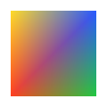

Módulo 4 · La GPU por dentro
VBO, VAO y EBO: la memoria de los vértices
Qué es exactamente un buffer de vértices, qué guarda exactamente un VAO (y qué no, que es donde está la confusión clásica), cómo se colocan los atributos en memoria byte a byte y por qué los índices ahorran mucho más que memoria.
Al terminar esta lección
- Sabrás qué hace
bufferDatacon tus bytes (y qué no hace), y para qué sirven los hints de uso. - Diseñarás el formato de un vértice: entrelazado o separado, con sus strides y offsets en bytes.
- Usarás atributos enteros normalizados (colores en
UNSIGNED_BYTE) y atributos enteros de verdad (vertexAttribIPointer). - Sabrás la lista completa de lo que guarda un VAO y comprobarás que
ARRAY_BUFFERno es parte de ella, con tres implementaciones distintas. - Usarás buffers de índices, entenderás la caché post-transformación y ordenarás índices para aprovecharla.
Tres objetos, tres papeles
Para dibujar, la GPU necesita los datos de cada vértice (posición, color, coordenadas de textura…) en su memoria, y necesita saber cómo leerlos. De eso se encargan tres objetos que llevas viendo de reojo todo el módulo:
- VBO (Vertex Buffer Object): un bloque de memoria de la GPU con los datos de los vértices. Solo bytes: no sabe si contiene floats, colores o nada útil.
- EBO (Element Buffer Object, también llamado IBO, index buffer): otro buffer, pero con índices: «dibuja el vértice 0, luego el 1, luego el 2, luego otra vez el 0…». Permite reutilizar vértices.
- VAO (Vertex Array Object): no guarda datos de vértices. Guarda la receta: para cada atributo, de qué buffer se lee, en qué formato, desde qué byte y cada cuántos bytes. Y qué buffer de índices usar.
En la GPU de juguete de 4.3 los tres eran objetos de Python que podías imprimir. Ahora vamos a mirarlos en la API real, con sus reglas exactas y sus trampas.
El VBO: bytes en la memoria de la GPU
Un buffer se crea, se enlaza y se llena. Ya conoces el patrón de 4.1:
- Crea el objeto. Todavía no tiene memoria: es solo un nombre.
- Lo enlaza en
ARRAY_BUFFER, el punto de enlace de los datos de vértices. En WebGL, el primer destino en el que enlazas un buffer lo marca para siempre: un buffer de vértices no puede enlazarse después como buffer de índices ni al revés (INVALID_OPERATION, lo comprobamos en Chrome). OpenGL nativo sí lo permite; WebGL no, porque necesita validar los índices en la CPU. - Reserva memoria del tamaño exacto de
datos(unTypedArray, unArrayBuffero unDataView) y copia los bytes. El tercer argumento es un hint, una pista para el driver sobre cómo lo usarás. CadabufferDatareemplaza la memoria entera, aunque cambie el tamaño. - Sobrescribe un trozo a partir del byte 16, sin cambiar el tamaño. Si te sales del tamaño reservado,
INVALID_VALUE(«buffer overflow», medido): un buffer no crece solo.
Tres detalles de bufferData que comprobamos en Chrome y que conviene tener claros:
- Copia. Si después de
bufferDatacambias elFloat32Arrayde JavaScript, la GPU no se entera: sus bytes son una copia. Para actualizar hay que volver a llamar abufferDataobufferSubData. - Se puede reservar sin datos:
gl.bufferData(gl.ARRAY_BUFFER, 1024, gl.DYNAMIC_DRAW)reserva 1 024 bytes. En WebGL están garantizados a cero (lo leímos de vuelta); en OpenGL nativo, su contenido es indefinido. - En WebGL2 puedes subir solo una parte de un array:
gl.bufferData(destino, array, uso, srcOffset, length). Ojo:srcOffsetylengthse cuentan en elementos delTypedArray, no en bytes (es de las pocas cosas de la API que no cuentan en bytes).
Los hints: STATIC, DYNAMIC, STREAM
El último argumento de bufferData no cambia lo que hace la llamada: es una promesa sobre cómo vas a usar el buffer, para que el driver decida dónde colocarlo.
| Hint | Promesa | Ejemplo |
|---|---|---|
STATIC_DRAW | lo escribo una vez y lo dibujo muchas | la malla de un personaje |
DYNAMIC_DRAW | lo reescribo a menudo y lo dibujo muchas veces | vértices animados en la CPU cada frame |
STREAM_DRAW | lo escribo, lo dibujo una o pocas veces y lo tiro | la geometría de un texto que cambia cada frame |
WebGL2 añade las variantes _READ y _COPY (para buffers que la GPU escribe y tú lees o copias). Mentir no produce errores: un buffer STATIC_DRAW que actualizas cada frame funciona igual, quizá más lento; muchos drivers ignoran el hint casi por completo. Puedes consultar el que elegiste con gl.getBufferParameter(gl.ARRAY_BUFFER, gl.BUFFER_USAGE).
Colocar los atributos: entrelazado o separado
Supón que cada vértice lleva una posición (2 floats, 8 bytes) y un color (4 bytes, uno por canal). Hay varias formas de colocar esos 12 bytes por vértice en memoria, y todas son correctas si el VAO las describe bien:
- Entrelazada (AoS, array of structures): todo el vértice 0, luego todo el vértice 1… Un solo buffer;
stride= 12 para los dos atributos;offset0 para la posición y 8 para el color. - Separada (SoA, structure of arrays): un buffer con todas las posiciones y otro con todos los colores.
stride0 («empaquetado») yoffset0 en los dos. - Por bloques: un solo buffer, primero todas las posiciones y luego todos los colores. El color empieza en el byte 32 (4 vértices × 8 bytes).
Elige una distribución, un atributo y un vértice, y mira exactamente qué bytes lee el vertex fetch (pasa el ratón o haz clic en los bytes):
La fórmula que ves en la demo es la única que usa el hardware: el atributo del vértice $i$ empieza en el byte
$$\text{dirección} = \text{offset} + i \times \text{stride}$$y ocupa $\text{size} \times \text{bytes del tipo}$ bytes. Con stride = 0, el stride efectivo es justo ese tamaño (atributos pegados). Todo en bytes: el error más frecuente es pasar el número de floats.
Síntoma: los triángulos aparecen estirados hasta el infinito, en posiciones absurdas o no aparecen; los colores parecen ruido. O WebGL avisa: GL_INVALID_OPERATION: glVertexAttribPointer: Stride must be a multiple of the passed in datatype.
Causa: stride y offset se miden en bytes, y has pasado el número de componentes: por ejemplo, stride 3 en lugar de 12 para un vértice de 3 floats. La GPU lee entonces floats que empiezan a mitad de otro float y los interpreta tal cual: en la GPU de juguete, leer la posición del vértice 1 con stride 3 da (107376120.0, 1.6e-19). WebGL, además, exige que stride y offset sean múltiplos del tamaño del tipo (4 para FLOAT) y que el stride no pase de 255.
Solución: multiplica por el tamaño del tipo: stride = componentesPorVértice * 4 para floats. Si usas un Float32Array, Float32Array.BYTES_PER_ELEMENT (4) deja claro qué estás multiplicando.
Ejemplo 4.4.1 — Diseñar el formato de un vértice
Un vértice lleva posición (3 floats), normal (3 componentes), coordenadas de textura (2 floats) y color (4 canales). Diseña un formato entrelazado compacto, escribe las cuatro llamadas a vertexAttribPointer y calcula cuánta memoria ahorras frente a ponerlo todo en floats, para una malla de 100 000 vértices.
- Todo en floats: $3 + 3 + 2 + 4 = 12$ floats = 48 bytes por vértice. Para 100 000 vértices, 4,8 MB.
- Compacto: la normal es un vector unitario (componentes entre −1 y 1): cabe en 3
SHORTnormalizados (2 bytes cada uno), que dan unas 32 767 divisiones por unidad. El color, en 4UNSIGNED_BYTEnormalizados. Posición y coordenadas de textura, en floats. - Alineación: WebGL exige que el offset de cada atributo sea múltiplo del tamaño de su tipo. La normal ocupa 6 bytes; si el siguiente atributo es un float, tiene que empezar en múltiplo de 4, así que añadimos 2 bytes de relleno.
- El formato: posición en 0–11, normal en 12–17, relleno en 18–19, uv en 20–27, color en 28–31. Stride = 32 bytes.
- Ahorro: 32 bytes frente a 48, un tercio menos: 3,2 MB en lugar de 4,8 MB para 100 000 vértices. Y la lectura de vértices también es un tercio más barata en ancho de banda, que ya sabes que es el recurso escaso (4.1). Los shaders no cambian: siguen recibiendo
vec3yvec4de floats.
El entrelazado es la opción por defecto para mallas estáticas: cuando el vertex fetch lee el vértice $i$, todos sus atributos están juntos en la misma línea de caché. El separado gana en dos casos: cuando un atributo cambia cada frame y los demás no (subes solo el buffer de posiciones con bufferSubData, sin tocar el resto) y cuando hay pasadas que solo necesitan un atributo (una pasada de sombras solo necesita posiciones: con un buffer aparte, no arrastra normales ni colores por la caché). Los motores reales suelen mezclar: un buffer con las posiciones y otro entrelazado con todo lo demás.
Tipos: floats, normalizados y enteros
El vertex fetch no solo lee bytes: los convierte al tipo que espera el shader. Con vertexAttribPointer el shader recibe siempre floats (declara in float, vec2, vec3 o vec4), y el cuarto argumento, normalized, decide qué pasa con los tipos enteros:
normalized = true: el entero se escala a un rango fijo. Sin signo, $[0, 2^b - 1] \to [0, 1]$ (un byte 255 llega como 1,0). Con signo, se divide por $2^{b-1} - 1$ y se limita a −1 (unBYTEde 127 llega como 1,0, y tanto el −127 como el −128 llegan como −1,0).normalized = false: el entero se convierte a float sin más (255 llega como 255,0).
Esto es lo que recibió el vertex shader en Chrome. Para leerlo de vuelta usamos transform feedback, una función de WebGL2 que copia las salidas del vertex shader a un buffer que después se puede leer desde JavaScript:
| Bytes en el buffer | Llamada | El shader recibe |
|---|---|---|
UNSIGNED_BYTE 255, 128, 0, 64 | normalizado | 1,0 · 0,50196 · 0,0 · 0,25098 |
UNSIGNED_BYTE 255, 128, 0, 64 | sin normalizar | 255,0 · 128,0 · 0,0 · 64,0 |
BYTE −128, −127, 127, 64 | normalizado | −1,0 · −1,0 · 1,0 · 0,50394 |
SHORT −32768, 32767, 16384, 1 | normalizado | −1,0 · 1,0 · 0,50002 · 0,0000305 |
UNSIGNED_BYTE 255, 51 (size 2) | normalizado | 1,0 · 0,2 · 0,0 · 1,0 (relleno) |
HALF_FLOAT 0x3C00, 0x3800, 0xC000, 0x7BFF | — | 1,0 · 0,5 · −2,0 · 65504 |
INT 7, −3, 100000, 2147483647 | vertexAttribIPointer, in ivec4 | 7 · −3 · 100000 · 2147483647 (exactos) |
Los colores en UNSIGNED_BYTE normalizados son el caso de uso estrella: ocupan 4 bytes en lugar de 16 y el shader no nota la diferencia. La GPU de juguete implementa exactamente estas reglas (el ejemplo_07_formatos.py dibuja el mismo quad con las tres distribuciones de la demo y comprueba que las tres imágenes son idénticas):

colores normalizadosnormalized = falseSíntoma: guardas los colores de los vértices como bytes (0–255) para ahorrar memoria y la malla sale completamente blanca, o con colores chillones.
Causa: normalized = false en vertexAttribPointer: el shader recibe 255,0 en lugar de 1,0, y el framebuffer satura todo lo que pasa de 1. El mismo síntoma aparece si pones en un buffer de floats valores de 0 a 255 (y en el clearColor: es el ejercicio 5.1.1).
Solución: gl.vertexAttribPointer(loc, 4, gl.UNSIGNED_BYTE, true, stride, offset). Si de verdad quieres los enteros sin escalar, recíbelos como enteros (siguiente apartado) o divide en el shader.
Atributos enteros de verdad: vertexAttribIPointer
A veces un atributo es un número entero con significado exacto: el índice de un hueso en un esqueleto, un identificador de material, un conjunto de banderas de bits. Convertirlo a float y compararlo con == es buscarse problemas (3.7). WebGL2 tiene una variante que entrega enteros sin convertir:
Fíjate en que falta el argumento normalized: no tiene sentido. Y hay una regla estricta que comprobamos en Chrome: el tipo base del atributo tiene que coincidir con el del shader. Float con float (vertexAttribPointer + vec), entero con signo con entero con signo (vertexAttribIPointer con BYTE/SHORT/INT + ivec) y sin signo con sin signo (UNSIGNED_* + uvec). Si no coinciden, no es la conversión la que falla: es el dibujo entero.
Síntoma: no se dibuja nada y la consola dice GL_INVALID_OPERATION: glDrawArrays: Vertex shader input type does not match the type of the bound vertex attribute.
Causa: el shader declara el atributo como entero (in int, ivec4, uvec4) y lo configuraste con vertexAttribPointer (que entrega floats), o al revés; o mezclaste signos: vertexAttribIPointer(…, gl.UNSIGNED_BYTE, …) con in ivec4 (lo medimos: INVALID_OPERATION; con uvec4 funciona).
Solución: que coincidan función, tipo y signo: vertexAttribPointer ↔ float/vecN; vertexAttribIPointer con tipos con signo ↔ int/ivecN; con tipos sin signo ↔ uint/uvecN.
Un buffer guarda colores RGBA como 4 bytes sin signo y el shader declara in vec4 a_color. ¿Qué llamada es la correcta?
gl.vertexAttribIPointer(1, 4, gl.UNSIGNED_BYTE, 12, 8)La versiónIentrega enteros y exige unuvec4en el shader. Convec4, el dibujo falla conINVALID_OPERATION.gl.vertexAttribPointer(1, 4, gl.UNSIGNED_BYTE, false, 12, 8)Funciona, pero el shader recibe valores de 0 a 255 (sin normalizar): colores saturados.gl.vertexAttribPointer(1, 4, gl.UNSIGNED_BYTE, true, 12, 8)Exacto: floats de 0 a 1 a partir de bytes. Cuatro veces menos memoria que cuatro floats, y el shader no se entera.
El VAO: qué guarda exactamente (y qué no)
Esta es la parte de la API que más gente cree entender sin entenderla. Un VAO es un objeto de estado: un contenedor de configuración. Esta es la lista completa de lo que guarda, según la especificación de OpenGL ES 3.0 y comprobado consultando el estado en Chrome, en el driver de Apple con PyOpenGL y con moderngl:
| Estado guardado en el VAO | ¿Cuántos? | Lo establece |
|---|---|---|
| atributo habilitado o no | uno por atributo (16 en nuestra máquina) | enableVertexAttribArray / disable… |
| el buffer del que se lee | uno por atributo | vertexAttribPointer: el que esté enlazado en ARRAY_BUFFER en ese momento |
size, type, normalized, stride, offset | uno por atributo | vertexAttribPointer |
| «es entero» | uno por atributo | vertexAttribIPointer |
divisor (instancing) | uno por atributo | vertexAttribDivisor (5.9) |
el buffer de índices (ELEMENT_ARRAY_BUFFER) | uno por VAO | bindBuffer(ELEMENT_ARRAY_BUFFER, …) con el VAO enlazado |
Y lo que no guarda, que es igual de importante:
- El enlace
ARRAY_BUFFER. Es estado del contexto. Cambiar de VAO no lo cambia; enlazar otro buffer enARRAY_BUFFERno cambia ningún VAO. Lo único que conectaARRAY_BUFFERcon un VAO es el momento de llamar avertexAttribPointer, que copia el buffer enlazado en el descriptor del atributo. - Los valores constantes de los atributos deshabilitados (
vertexAttrib4f): son del contexto (4.5). - El programa, los uniforms, las texturas, el viewport, el blending: nada de eso tiene que ver con el VAO.
No te lo creas: pregúntaselo a WebGL.
La salida (en Chrome sobre Metal) confirma la tabla: los atributos de vaoA siguen leyendo de x aunque ARRAY_BUFFER sea y; con vaoB enlazado los atributos están deshabilitados y sin buffer, el EBO es null… pero ARRAY_BUFFER sigue siendo y y el valor constante del atributo 3 sigue siendo $(0{,}1,\ 0{,}2,\ 0{,}3,\ 0{,}4)$: ninguno de los dos es del VAO. El mismo experimento con llamadas crudas de OpenGL (python/pyopengl/02_estado_y_errores.py, sobre el driver OpenGL de Apple) da lo mismo:
Observa el atributo 2, que nunca se tocó: el estado inicial de cualquier atributo es «deshabilitado, sin buffer, size 4, FLOAT, stride 0, offset 0» (también lo medimos en WebGL).
Ejemplo 4.4.2 — El orden de las llamadas al configurar un VAO
Queremos un VAO para el quad entrelazado de la demo, con índices. ¿En qué orden van las llamadas y qué pasa si lo cambias?
- Primero el VAO. A partir de aquí, cada
enableVertexAttribArray, cadavertexAttribPointery cada enlace deELEMENT_ARRAY_BUFFERse graban en él. Si te saltas este paso, todo se graba en el VAO que estuviera enlazado (quizá el de otra malla, quizá el de por defecto). - El buffer del que leerán los atributos. Tiene que estar enlazado antes de
vertexAttribPointer: si lo enlazas después, los atributos capturan el que hubiera antes (onull, y entonces el dibujo falla conno buffer is bound to enabled attribute). - Habilitar y describir cada atributo. El orden entre
enableyvertexAttribPointerda igual; lo que importa es que los dos ocurran con este VAO enlazado. - El buffer de índices, con el VAO enlazado: así queda guardado en él. Si lo enlazaras antes de la línea 2, se lo quedaría el VAO anterior.
- Desenlazar el VAO. No es obligatorio, pero protege: cualquier
bindBuffer(ELEMENT_ARRAY_BUFFER, …)que haga luego otro código ya no modificará este VAO. Ojo con la tentación contraria:gl.bindBuffer(gl.ELEMENT_ARRAY_BUFFER, null)antes de esta línea le quitaría el EBO al VAO (lo comprobamos: después,drawElementsfalla conMust have element array buffer bound). ConARRAY_BUFFERno pasa nada: puedes desenlazarlo cuando quieras.
Para dibujar, basta con gl.bindVertexArray(vao) y gl.drawElements(gl.TRIANGLES, 6, gl.UNSIGNED_SHORT, 0): una llamada restaura toda la receta. Esa es la razón de ser del VAO: sin él (en WebGL1 sin extensiones) habría que repetir los vertexAttribPointer de cada malla antes de cada dibujo.
Síntoma: una malla se dibuja con los índices de otra (triángulos que conectan vértices al azar), o drawElements falla con GL_INVALID_OPERATION: glDrawElements: Must have element array buffer bound aunque «acabas de enlazar el EBO».
Causa: el enlace ELEMENT_ARRAY_BUFFER es estado del VAO que esté enlazado en ese momento. Si enlazas el EBO antes de enlazar tu VAO, se lo queda el VAO anterior; si lo desenlazas (null) con tu VAO enlazado, se lo quitas.
Solución: sigue el orden del ejemplo 4.4.2: VAO, buffers, atributos, EBO, y desenlazar el VAO al final. Para comprobarlo, con tu VAO enlazado, gl.getParameter(gl.ELEMENT_ARRAY_BUFFER_BINDING) debe devolver tu EBO.
Síntoma: para cambiar la geometría creas un buffer nuevo, lo rellenas y lo enlazas en ARRAY_BUFFER, pero se sigue dibujando la malla antigua.
Causa: el VAO guarda el buffer que había enlazado cuando llamaste a vertexAttribPointer. Enlazar otro en ARRAY_BUFFER no afecta al VAO.
Solución: o bien actualiza el contenido del buffer antiguo (bufferData/bufferSubData con él enlazado), o bien, con el VAO enlazado, enlaza el buffer nuevo y repite los vertexAttribPointer para que lo capturen.
Un VAO no sabe nada de programas: solo guarda «la location 0 lee de este buffer así, la 1 de este otro asá». Si todos tus programas ponen cada atributo en la misma location, un único VAO por malla sirve para todos (el del color, el de las sombras, el de depuración…) sin reconfigurar nada. Para garantizarlo, fija las locations en el shader con layout(location = N), o con gl.bindAttribLocation(programa, N, nombre) antes de enlazar.
Lo comprobamos con un VAO (posición en la location 0, color en la 1) y cinco programas. Los dos que usan layout dibujan bien aunque declaren los atributos en distinto orden. Sin layout, el enlazador de Chrome asignó las locations por orden de declaración: el programa que declara primero a_pos funcionó, de casualidad; el que declara primero a_color recibió el color como posición; y uno con un atributo más acabó con a_pos en la location 2, que el VAO ni siquiera tiene activada. Estos dos últimos no pintaron nada, y sin ningún error.
El VAO por defecto: WebGL1, WebGL2 y OpenGL de escritorio
Si no enlazas ningún VAO, ¿dónde se guarda el estado de los atributos? Depende de la API:
- WebGL1: no tenía VAOs en el núcleo. Había un único VAO implícito y la extensión
OES_vertex_array_objectpara crear más (sigue disponible: en Chrome,getExtension('OES_vertex_array_object')devuelve un objeto concreateVertexArrayOES(); el contexto WebGL1 no tienecreateVertexArray). - WebGL2: VAOs en el núcleo, y el VAO por defecto sigue existiendo:
gl.bindVertexArray(null)lo enlaza y se puede configurar y dibujar con él (lo comprobamos). - OpenGL de escritorio en perfil core (el único disponible en macOS por encima de 2.1): no hay VAO por defecto. Sin un VAO enlazado, el driver de Apple da
GL_INVALID_OPERATIONenglEnableVertexAttribArrayy englDrawArrays(y, curiosamente, no englVertexAttribPointer). Lo verás en 4.6.
Regla práctica: en WebGL2, crea siempre tus propios VAOs, uno por malla, y no dejes estado en el VAO por defecto.
Índices: el EBO
Un quad son dos triángulos que comparten dos vértices. Sin índices, esos dos vértices se guardan (y se procesan) dos veces: 6 vértices. Con un buffer de índices, se guardan 4 vértices y una lista de 6 índices, 0 1 2 0 2 3, que dice qué vértices forman cada triángulo:
Los argumentos de drawElements: el modo (igual que en drawArrays), cuántos índices (no cuántos vértices ni cuántos triángulos), el tipo de cada índice y el byte del EBO donde empezar, que tiene que ser múltiplo del tamaño del índice (con UNSIGNED_SHORT, un offset impar da INVALID_OPERATION: medido).
| Tipo de índice | Bytes | Índice máximo | Notas |
|---|---|---|---|
UNSIGNED_BYTE | 1 | 254 | mallas diminutas |
UNSIGNED_SHORT | 2 | 65 534 | el habitual; ¡65 535 está reservado! |
UNSIGNED_INT | 4 | 4 294 967 294 | en WebGL2 sin extensiones (en WebGL1, OES_element_index_uint) |
La columna del máximo tiene truco: el valor más alto de cada tipo (255, 65 535, 4 294 967 295) está reservado para el reinicio de primitivas (primitive restart). En WebGL2 está siempre activo (ni siquiera se puede desactivar: gl.enable(gl.PRIMITIVE_RESTART_FIXED_INDEX) da INVALID_ENUM, porque en WebGL no existe como opción). Cuando el ensamblado encuentra ese índice, corta la primitiva y empieza una nueva. Es útil para dibujar varias tiras separadas en un solo drawElements: medimos que 0 1 2 3 · 65535 · 4 5 6 7 en TRIANGLE_STRIP dibuja dos quads separados, sin los triángulos «puente» que se formarían sin el corte.
Síntoma: una malla grande con índices UNSIGNED_SHORT pierde triángulos, o a partir de cierto punto los triángulos conectan vértices equivocados.
Causa: dos problemas que suelen ir juntos. Un Uint16Array no puede guardar índices mayores que 65 535: el 65 536 se convierte en 0 sin avisar (aritmética módulo $2^{16}$, 1.6). Y el índice 65 535 es el de reinicio: en TRIANGLES, medimos que descarta el triángulo incompleto en el que aparece y el ensamblado vuelve a empezar desde el índice siguiente, así que los triángulos de después pueden quedar desalineados. Y basta un solo triángulo para verlo: con 65 536 vértices, el de índices (0, 1, 65535) no pintó ni un píxel y el (0, 1, 65534) sí; con Uint32Array, el 65535 funcionó como un vértice normal.
Solución: con más de 65 535 vértices, usa Uint32Array y gl.UNSIGNED_INT, o parte la malla en trozos de menos de 65 535 vértices.
Otra diferencia con OpenGL nativo: WebGL comprueba cada dibujo con índices. Si un índice apunta más allá del final de algún buffer de atributos, el dibujo falla con INVALID_OPERATION (Vertex buffer is not big enough for the draw call, medido con un índice 50 en un buffer de 8 vértices). OpenGL nativo leería memoria ajena. Esa seguridad cuesta tiempo de CPU (WebGL guarda una copia de tus índices para poder revisarlos), y es la razón de que un buffer de índices no pueda usarse también como buffer de vértices.
Por qué los índices ahorran más que memoria
El ahorro de memoria es modesto: en el quad, 64 + 12 = 76 bytes frente a 96. Lo importante es el trabajo: con índices, la GPU sabe cuándo dos vértices son el mismo y puede reutilizar el resultado del vertex shader en lugar de volver a ejecutarlo. Guarda los últimos vértices transformados en una pequeña caché post-transformación, indexada por el índice. Con la GPU de juguete (que tiene una caché FIFO de tamaño configurable) podemos contar cuántas veces se ejecuta el vertex shader:
La columna «VS/triángulo» es la métrica clásica (se suele llamar ACMR, average cache miss ratio). Sin caché, cada triángulo cuesta 3 ejecuciones del vertex shader. Con una caché infinita, cada vértice se procesa una vez: 289 / 512 ≈ 0,56 (una malla de triángulos tiene, de media, unos dos triángulos por vértice). Con una caché de 16 y los triángulos recorridos fila a fila, 1,06. Y con los mismos triángulos en orden aleatorio, 2,88: la caché casi no sirve. El orden de los índices importa casi tanto como su existencia.
Ejemplo 4.4.3 — ¿Por qué 1,06 y no 0,56?
Con la rejilla recorrida fila a fila y una caché FIFO de 16 entradas, ¿por qué no se alcanza el ideal de 0,56 invocaciones por triángulo?
- Qué necesita cada triángulo: al recorrer la fila $j$, los triángulos usan vértices de la fila de abajo ($j$) y de la de arriba ($j + 1$). Cada fila de la rejilla tiene 17 vértices.
- Qué hay en la caché: cuando el recorrido llega a la columna $i$ de la fila $j$, el vértice de abajo que necesita (de la fila $j$) entró en la caché al procesar la columna $i$ de la fila anterior, como vértice «de arriba». Desde entonces se han insertado los vértices del resto de la fila anterior y los del principio de esta: unos 32 (dos por columna, porque los de abajo también fallaban). Una FIFO de 16 solo recuerda los 16 últimos: ese vértice ya ha salido.
- Resultado: casi todos los vértices se procesan dos veces, una como fila de arriba y otra como fila de abajo: 544 invocaciones (las filas inferior y superior de la rejilla solo se procesan una vez), que entre 512 triángulos son 1,06. Con una caché de 32, que alcanza a recordar esas inserciones, baja a 1,00.
- La lección: para aprovechar una caché de $K$ entradas hay que recorrer la malla en «bandas» lo bastante estrechas como para que la fila anterior quepa en la caché. Lo harás en el ejercicio 4.4.4 y bajarás de 0,7.
Las GPU modernas no tienen exactamente una FIFO de 16 entradas: unas reutilizan vértices dentro de un «lote» de índices, otras tienen cachés de tamaños y políticas que los fabricantes no siempre documentan. Pero la conclusión práctica es la misma en todas: índices ordenados para que los triángulos cercanos se dibujen juntos. Las herramientas de exportación y bibliotecas como meshoptimizer reordenan los índices de las mallas por ti; es un paso que casi todo motor aplica al importar un modelo.
Una malla tiene 10 000 vértices y 19 000 triángulos. La dibujas con drawElements(gl.TRIANGLES, …). ¿Cuál es el count correcto?
- 10 000, el número de vértices.Con índices,
countno son vértices distintos: es cuántos índices leer del EBO. - 19 000, el número de triángulos.Casi: cada triángulo necesita 3 índices en modo
TRIANGLES. - 57 000: tres índices por triángulo.Exacto. Y con 10 000 vértices basta con
Uint16ArrayyUNSIGNED_SHORT(el índice más alto, 9 999, está muy lejos del 65 535 reservado).
Lo mismo, en la GPU real desde Python
El script python/moderngl/02_buffers_y_vao.py sube el quad entrelazado de la demo a la GPU con moderngl, lo lee de vuelta con buffer.read() y, sobre el mismo contexto, pregunta al driver con PyOpenGL qué ha guardado moderngl en el VAO. moderngl describe el formato con una cadena: "2f 4f1" significa «2 floats, y luego 4 valores de 1 byte que el shader verá como float», es decir, UNSIGNED_BYTE normalizado (lo comprobamos preguntando al driver; lo verás a fondo en 4.6):
Tres cosas para fijarse. Los bytes de $-0{,}8$ son cd cc 4c bf: el 0,8 no es exacto en binario, igual que el 0,9 del bestiario de 4.3. La imagen que dibuja la GPU real con este VAO (moderngl-quad.png) es idéntica, píxel a píxel, a la que dibuja la GPU de juguete con el mismo buffer (juguete-formatos.png): lo comprobamos. Y las últimas líneas muestran algo que verás con los uniforms en 4.5 y con los atributos en 5.2: si el shader no usa un atributo, el enlazador lo elimina, y moderngl se niega a configurarlo (KeyError); la cadena de formato "4x" sirve para saltarse esos bytes.
Ejercicios
Ejercicio 4.4.1 — ¿Qué bytes lee el vertex fetch?
Con el formato compacto del ejemplo 4.4.1 (stride 32: posición en 0–11, normal SHORT normalizada en 12–17, uv en 20–27, color en 28–31): (a) ¿qué bytes lee la GPU para el uv del vértice 5? (b) ¿Y para la normal del vértice 2? (c) Si la componente y de esa normal guarda el SHORT 16 384, ¿qué valor recibe el shader? (d) ¿Qué bytes no lee nunca ningún atributo?
Pista
Dirección = offset + i × stride. El uv son 2 floats (8 bytes); la normal, 3 shorts (6 bytes). Para (c), un SHORT normalizado se divide por 32 767.
Solución explicada
(a) $20 + 5 \times 32 = 180$: bytes 180 a 187. (b) $12 + 2 \times 32 = 76$: bytes 76 a 81 (la x en 76–77, la y en 78–79, la z en 80–81). (c) $16\,384 / 32\,767 \approx 0{,}50002$ (no exactamente 0,5: el divisor es 32 767, no 32 768; es la misma cifra que midió el shader en la tabla de tipos). (d) Los bytes de relleno, 18 y 19 de cada vértice: $18 + i \times 32$ y $19 + i \times 32$. Existen solo para que el uv empiece en un múltiplo de 4, como exige WebGL. Si alguna vez necesitas un dato extra de 2 bytes, ahí tienes sitio gratis.
Ejercicio 4.4.2 — El quad blanco y deshecho
Este programa empaqueta un quad entrelazado (posición en 2 floats + color en 4 bytes, 12 bytes por vértice) con un DataView (1.6) y lo dibuja con índices. Pero sale deformado y blanco, y getError no protesta: para la API, todas las llamadas son válidas. Hay dos fallos, los dos en llamadas a vertexAttribPointer. Arréglalos: debe verse el quad con un degradado de rojo, verde, azul y amarillo en las esquinas.
Pista 1
El stride es la distancia en bytes entre el principio de un vértice y el principio del siguiente, no el tamaño del atributo. ¿Cuántos bytes ocupa un vértice entero en este buffer?
Pista 2
Con la posición arreglada, el quad sale blanco. ¿Qué rango de valores recibe el shader en a_color si los bytes no se normalizan?
Solución explicada
Fallo 1: el stride de la posición es 8, el tamaño de la posición, cuando de un vértice al siguiente hay 12 bytes (8 de posición + 4 de color). El vértice 0 se lee bien (bytes 0–7), pero el vértice 1 se lee en los bytes 8–15: los 4 bytes del color del vértice 0 interpretados como un float, más la x del vértice 1. Basura con apariencia de número: geometría deshecha. Fallo 2: el color no se normaliza, así que el shader recibe valores de 0 a 255 y todo se satura a blanco. Con normalized = true, 255 → 1,0 y 64 → 0,251.
Ninguno de los dos da error: para la API, un stride de 8 y un color sin normalizar son configuraciones perfectamente válidas (WebGL solo rechaza strides que no sean múltiplos del tamaño del tipo, o mayores de 255). Por eso estos dos fallos son clásicos del bestiario: nada te avisa, y hay que razonar con los bytes. La demo de la memoria de esta lección es la herramienta mental para eso.
Ejercicio 4.4.3 — De drawArrays a drawElements
El programa dibuja un hexágono como 6 triángulos independientes con drawArrays: 18 vértices, aunque solo hay 7 puntos distintos (el centro y los 6 del borde). Conviértelo a drawElements: un VBO con los 7 vértices, un EBO con 18 índices (Uint16Array) y la llamada correcta. La consola muestra cuántos bytes subes a la GPU; debe verse exactamente el mismo hexágono.
Pista 1
El VBO nuevo es new Float32Array(puntos.flat()). Cada triángulo es (centro, punto del borde $k$, punto del borde $k + 1$): con el centro en el índice 0, los del borde son los índices 1 a 6.
Pista 2
El EBO se enlaza en ELEMENT_ARRAY_BUFFER con el VAO enlazado. Y en drawElements el segundo argumento es el número de índices.
Solución explicada
Los datos pasan de 18 vértices × 8 bytes = 144 bytes a 7 × 8 = 56 bytes de vértices más 18 × 2 = 36 bytes de índices: 92 bytes. Y, sobre todo, el vertex shader pasa de ejecutarse 18 veces a (idealmente) 7: el centro, que usan los seis triángulos, se transforma una sola vez y se reutiliza desde la caché.
El truco de (k + 1) % 6 cierra el hexágono: el último triángulo usa el borde 6 y el borde 1. Y fíjate en que el hexágono se ve igual con las dos versiones: los índices no cambian qué se dibuja, solo cómo se describe. El orden de los índices dentro de cada triángulo sí importa: centro, $k$, $k + 1$ recorre cada triángulo en sentido antihorario (el ángulo crece), así que todos son frontales si activas el culling.
Ejercicio 4.4.4 — Ordena los triángulos para la caché
Con la GPU de juguete en JavaScript: la rejilla de 16 × 16 quads del ejemplo 4.4.3, con los triángulos en orden aleatorio y una caché de 16 entradas, cuesta unas 2,9 invocaciones del vertex shader por triángulo. Escribe la función ordenar(triangulos), que recibe la lista de triángulos (cada uno, un array de 3 índices) y devuelve los mismos en otro orden. Objetivo: menos de 0,8 invocaciones por triángulo. Recorrer por filas da 1,06; habrá que pensar un poco más.
Pista 1
Primero, ordénalos por filas (compara Math.min(...t)): deberías obtener 1,06. Lee el ejemplo 4.4.3 para entender por qué no baja más.
Pista 2
El problema es que una fila entera (17 vértices) no cabe en la caché. Recorre la rejilla en bandas verticales de pocas columnas, fila a fila dentro de cada banda. ¿Cuántas columnas caben si hay que mantener en la caché la fila de abajo y la de arriba de la banda?
Solución explicada
Con bandas de 7 columnas, al procesar la fila $j$ de una banda, los 8 vértices de su fila de abajo entraron en la caché al procesar la fila $j - 1$ (como fila de arriba) y siguen ahí, porque la banda solo mete 8 vértices nuevos por fila y la caché guarda 16. Cada fila de la banda añade 8 vértices nuevos para 14 triángulos: ≈ 0,57, más un pequeño sobrecoste en los bordes de las bandas. En la GPU de juguete, esta función da 0,64 (medido; según los desempates del orden, entre 0,63 y 0,66 con bandas de 4 a 7 columnas). Con bandas de 8 columnas vuelve a subir a 1,01: 9 + 9 = 18 vértices ya no caben en 16.
Es exactamente la clase de razonamiento que hacen los algoritmos de optimización de mallas (el de Tom Forsyth, el de meshoptimizer), aunque generalizado a mallas arbitrarias y a cachés de tamaño desconocido. Y la moraleja vale para cualquier caché: el orden de los datos puede valer tanto como los datos.
- Un VBO es memoria de la GPU sin tipo.
bufferDatareserva y copia (en WebGL, una reserva sin datos queda a cero);bufferSubDatasobrescribe sin crecer. Los hints (STATIC/DYNAMIC/STREAM) son promesas, no órdenes. - Colocación: entrelazada (un buffer, stride = tamaño del vértice) o separada (un buffer por atributo). Dirección del atributo del vértice $i$ = offset + $i$ × stride, en bytes; stride 0 = empaquetado.
vertexAttribPointerentrega floats: los enteros se normalizan (true: 255 → 1,0) o se convierten tal cual (false: 255 → 255,0).vertexAttribIPointerentrega enteros; función, tipo y signo deben coincidir con el shader o el dibujo falla.- El VAO guarda, por atributo: habilitado, buffer capturado, size, type, normalized, entero, stride, offset y divisor; y el
ELEMENT_ARRAY_BUFFER. No guarda el enlaceARRAY_BUFFERni los valores constantes. - Orden de configuración: VAO → buffer → atributos → EBO → desenlazar el VAO. En WebGL2 hay VAO por defecto; en OpenGL core (macOS) no.
- Índices:
drawElements(modo, nº de índices, tipo, offset en bytes). El índice máximo de cada tipo está reservado para el reinicio de primitivas (siempre activo en WebGL2). WebGL valida los índices; OpenGL nativo no. - La caché post-transformación reutiliza vértices procesados: el orden de los índices decide cuánto (de 2,9 a 0,64 invocaciones por triángulo en la misma rejilla).
Para profundizar
- Khronos, Vertex Specification (OpenGL Wiki): el VAO, sus estados y sus trampas, en detalle.
- MDN,
vertexAttribPointeryvertexAttribIPointer. - Arseny Kapoulkine, meshoptimizer y su explicación de la optimización de la caché de vértices.
- Tom Forsyth, Linear-Speed Vertex Cache Optimisation.